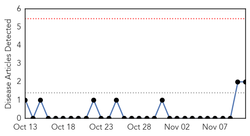
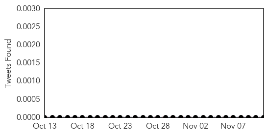
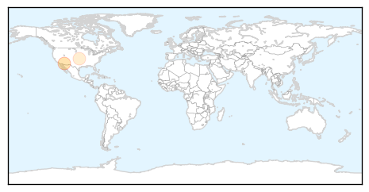

Meningitis
30-Day Web Trend
1 alerts, 0 warnings

30-Day Twitter Trend
6 alerts, 0 warnings

Article Locations

Article Confidences

Top Articles:
- 0.988
- Effective Vaccine Raises Hope Of Eliminating Meningitis From Africa
- 0.987
- Affordable vaccine brings Africa near elimination of meningitis A – UN health agency
- 0.974
- Meningitis A elimination: WHO scores Nigeria, 15 others high
- 0.971
- New meningitis strains could thrive following vaccine success
- 0.966
- MRF Hails Fantastic African Meningitis Vaccination Programme Which Saves Thousands of Lives
- 0.935
- Reports show meningitis vaccine's huge impact in Africa
- 0.927
- Indian vaccine for meningitis hailed in Africa
- 0.840
- The lifesaving message that Facebook doesn’t want you to see
- 0.793
- MenAfriVac succeeds in sub-Saharan Africa, but the fight isn't over yet
Top Tweets:
-
No tweets found for Nov 11, 2015
Mold/Fungal
30-Day Web Trend
0 alerts, 0 warnings

30-Day Twitter Trend
0 alerts, 0 warnings

Article Locations
Article Confidences

Top Articles:
Top Tweets:
-
No tweets found for Nov 11, 2015